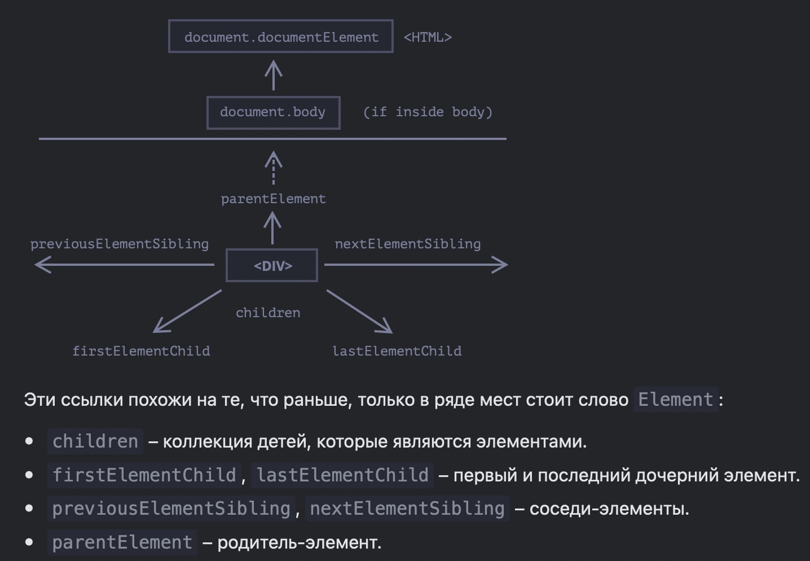
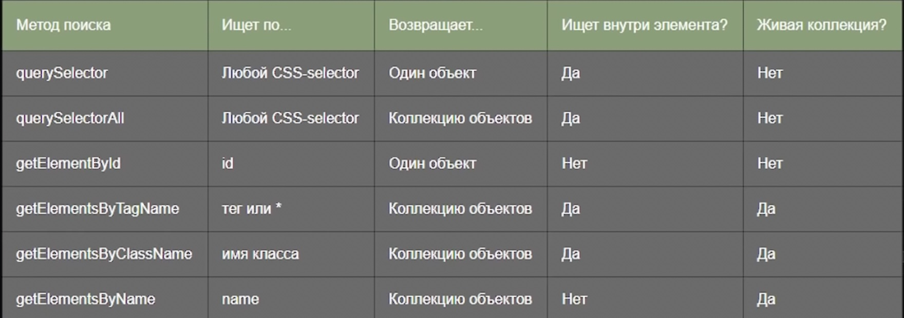
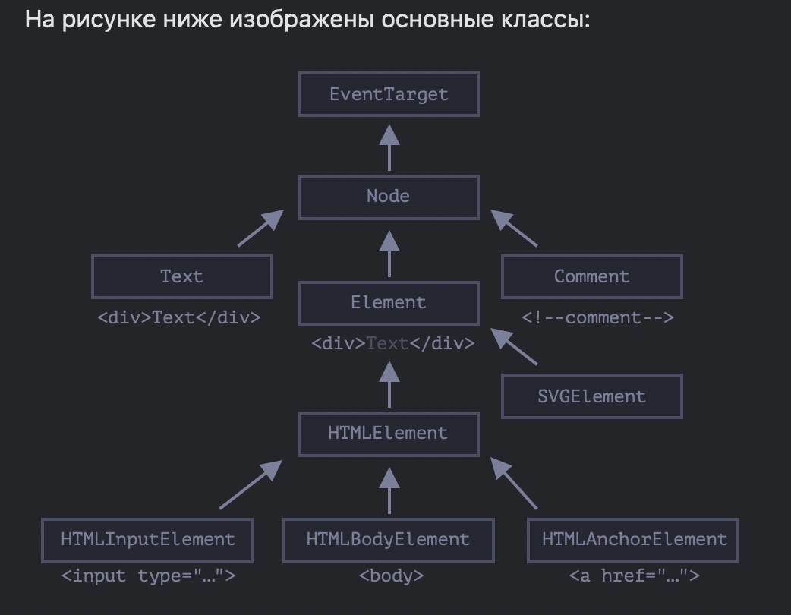

Не указываем высоту и ширину в твердых величинах - только внутренними padding. Высота может указаться разве что на header и button (исключительно высокие большие по контенту кнопки.
Лого одеваем в ссылку которая при нажатии ведет на главную страницу.
Не забываем про 100vh - это полностью захват всего дисплея.
В резиновой верстке убираем max-width и делаем width: calk(100%-20px); - это авто рассчет формулой
Max-Width - всегда 100%, height - auto. для начального состояния фотки
Изображение один из самых тяжелых запросов для сервера - поэтому нуждается в вариантах облегчения
мы должны использовать изображение в том размере что есть в макете
Все растровые изображения нужно пропускать через оптимизиллу
Img кодом в HTML вставляют только для фоток на первом экране - для быстрой загрузки
Всем изображениям обязательно нужно добавлять контейнер обертку.
резиновым делает изображение и размеры заданные в процентах, в пикселах оно уже статичное.
нужно запомнить каким образом padding-top отвечает в процентах за высоту элемента вычисляясь от его ширины. (100% - квадрат, меньше - прямоугольник, больше - вытянутый прямоугольник.)
Load cтраницы не должен быть больше 2 секунд, поэтому играют с адаптированными фотками.
(5:00) - пример создания карт товаров в ИМ на grid и flexbox
(58:00) - доделываем выпадающий бургер
(1:24) - делаем плавный скрол с помощью js
(2:23) - разбираем верхнюю часть работы по примеру Ромы
(2:54) - попытка сделать галерею с помощью примера на CCC Trics (провалилась)
(3:22) - обсуждение верстки домашней работы (свойство columns)
(3:50 - 4:48) - верстка предпоследнего блока из ДЗ
(4:48) - выводы по верстке предпоследнего блока/li>
(5:03) - обсуждение ДЗ на следующий урок
Conclusions
При позиционировании мы нагружаем процессор, при трансофрмациях - нагружаем видео карту. Не нагружайте что-то одно, чтоб слабые компы пользователя могли нормально работать.
(09:00) - пример как сделать поле ввода и кнопку впритык без переломчиков
(24:00) - пример как сделать кнопку с угловым движением по примеру первого макета
(42:00) - блок с декоративными полукругами в макете
(1:00) - обсуждение отдельных блоков макета.
(1:30) - еще один пример декоративных полукругов с помощью псевдоэлементов бефор и афтер
(1:37) - обсуждение эффекта Параллакс
(1:51 - лейзи на бекграунд колор - исправление ошибки)
(2:06) - объяснение фреймворка css Bootstrap
(2:45) - балтология
Conclusions
background img - свойство которое не наследуется.
если плейсхолдер в форме на середине то и текст должен печататься с середины
тексты search лучше заворачивать в спан и на маленьком размере скрывать слово и оставлять значок только поиска
расстояние элементу даем с той стороны к которой она визуально ближе - right или left.
если какие-то элементы имеют позицию от центра - то позиционировать их нужно именно от центра
если называете блоки - делайте имена классов отвлеченными для того чтоб их потом можно было перемещать и перезаполнять другим контентом.
backgraund colore с прозрачностью лучше указывать в формате rgba а не с opacity - чтоб не было проблем в мобильной версии.
если добавляем скрипты в конец HTML - объединяй их в один скрипт
логотипы не загружаем через lazyload
лучше всего все скрипты вложить в отдельный файл и его подключить к HTML как файл CSS
следите за левыми и правыми паддингами - при ресайзе - чтоб было одинаково и с больше воздуха
REL в ссылках на серьезные ресурсы можно не ставить потому что они проверены и скорее всего без заразы
когда какие-то фрагменты будут пере использованы на сайте лучше не делать их вложенностью в scss
лучше скачать файл css от Bootstrap и подключить его локально как обычный css
файл bootstrap весть до 25 кб - он тяжелый - просто так лучше не сипользовать или пользовать для админок или на то на что не хочется тратить время на верстку ручную
(04:00) - объяснение про языки со строгой типизацией и не строгой и "серьезность разработки"
(06:41) - атрибуты deffer и async
(16:00) - объяснение почему лучше подключать js отдельными файлами
(24:00) - показ консоли через подключенный к странице файл js - на примере встроенных функций
(26:00) - показ функции alert
(29:00) - показ функции confirm
(34:00) - показ функции prompt
(38:00) - про комментарии - однострочные и многострочные
(39:00) - использование переменных с CONST
(42:00) - использование переменной с var
(1:15) - разбор типов данных
(1:29) - проверка с помощью оператора typeoff типов данных
(1:38) - пример прописи функций
(1:53) - начало домашней работы из slack
(2:03) - пример встроенного метода Math.pow
(2:16) - пример того как сделать многократно пере используемый код
(2:20) - пример с debagger
(2:25) - подключение bootstrap к странице
(3:00) - начинаем кодить сами под присмотром Саши
(3:23) метод объединения с обратными кавычками-
(3:40) - 6я задача из списка
(3:47) - 7я задача из списка
(04:05) - 8я задача из списка
(04:18) - советы по поводу двух оставшихся на дом задач
Conclusions
- Нужно подключать файлы скрипты по мере сложности - самый большой, потом поменьше и тд по нисходящей
- Саша подключает первыми тяжелые библиотеки, а уже все легкие файлы с атрибутом deffer
- Все скрипты лучше писать в отдельных файлах и потом их локально подключать, это же качается и библиотек и отдельных плагинов
- Функции alert, prompt и confirm в реальности не используются (только бекендом), плюс во всех браузерах оно выглядит по разному и мы не можем на это повлиять.
- Alert приостанавливает исполнение кода. Это можно использовать
- константу менять нельзя кроме константного объекта - и в нем некоторых значений
- var устаревший метод объявление перeменной, отличает от let - область видимости - она может всплывать вверх (hoisting) в код не только вниз как let или const
- parseInt - функция, которая откидывает все после запятой и все что не число после числа. Если ввести q3 - будет NAN результат вычисления
- строки с простыми действиями сработают быстрее чем встроенные методы например Math.pow
- называть функцию желательно так, чтоб понимать что та функция исполняет
General conclusions
1. Любое выражение всегда возвращает значение.
2. Есть выражения, которые выполняют какие-то действия и они называются выражениями с побочным эффектом (например присваивание).
3. Переменные дают возможность повторного доступа к значениям.
4. Именование переменных:
PascalCase - для типов и классов.
DB_PASWORD - для заранее известных глобальных констант переменных.
camelCase - во всех остальных случаях.
5. Нельзя объявлять переменную const и ничего ей не присваивать будет ошибка.
6. Примитивное значение хранится в самой переменной, а вот объект не хранит в переменной свое значение в переменной хранится только ссылка на область памяти где существует сам объект.
7. JavaScript - динамически типизируемый язык.
8. Лучше использовать const везде, где это можно чтоб случайно не присвоить значение другого типа уже существующей переменной и объявлять переменные до их использования.
9. Оператор Delete удаляет из объекта свойства.
10. Метод - это свойство объекта значение которого - функция.
11. JSON - JavaScript object notation - формат обмена данными между компом и серверами.
12. JSON.parse - перевод из строки от сервера в вид объекта для нас и JSON.stringify - перевод в строку для передачи серверу - методы JSON объекта.
13. Функция это блок кода который можно выполнять многократно.
Контекст функции это область видимости для функции плюс переменная this (а это ссылка на объект который вызывает код в данный момент
14. Функция может быть :
- Именованной
- Присвоенной переменной.
- Анонимной.
- Аргументом при вызове другой функции
- Значением (свойством) метода объекта
15. Функция это объект, а как у каждого объекта у нее есть свойства.
16. После вызова слова return - функция прекращает дальнейшее исполнение инструкций и возвращает значение выражений которые вычистились выше слова return.
17. Если у Функции нет инструкции return, то она возвращает значение Undefined.
18. При вызове функции мы объявляем аргументы, которые передаются в параметры функции, а после в ее тело для выполнения.
19. Внутри функции не рекомендуется мутировать внешние объекты.
20. Внутри функции не рекомендуется мутировать внешние объекты, которые передаются в функцию через параметры из аргументов. Лучше внутри функции копировать такой объект - и работать с ним изменяя его, а результат этой функции передавать туда куда нам нужно.
21. Функции не должны менять внешние переменные они должны работать только со своими внутренними переменными.
22. Callback функции это просто функции которые вызываются внутри других функций.
23. Правила работы с функциями :
- Называть функции исходя из выполняемых задач.
- Одна функция должна выполнять одну задачу.
- Не рекомендуется изменять внешние относительно функции переменные.
24. Типы областей видимости :
- Глобальная область видимости.
- Локальная область видимости.
- Область видимости ограниченная блоком {}.
25. Не рекомендуется присваивать внутри локальной области видимости значение объявленной ранее переменной которой не дали значения ибо это значение поднимается автоматически в глобальную область видимости хотя оно и было присвоено не там.
26. Правила работы с переменными :
- Все переменные объявлять перед их использованием.
- Стараться использовать const везде, где это возможно.
- Внутри функции не изменять переменные с внешних областей видимости.
27. Можно пользоваться не только плюсом для конкатенации строк чтоб не думать про пробелы, а и с помощью шаблонной строки `${}` тогда про пробелы думать не нужно они создаются автоматически
28. Между объявленной функцией и функциональным выражением только одна разница - у нее нет имени. Следовательно, они всегда анонимны. Плюс ее нельзя использовать автономно. Его чаще всего используют в callback функцией. Но ее можно присвоить в любой момент любой переменной.
Callback функция это функция которую пишут и чаще всего передают в форме аргумента в другую функцию.
Ад Callback - это тогда когда вложенность настолько большая что становиться трудно читать и поддерживать код
29. Стрелочная функция это пример анонимной функции без слова function. Сначала идут аргументы, потом стрелка и дальше тело функции в {}, но ей можно дать имя, как и с function expression путем присваивания переменной. Если у нее один параметр то () скобки можно опустить и если одна строка тела функции то скобки {} можно опустить.
30. Стрелочная функция автоматически возвращает результат без слова return - это неявный возврат значения.
31. '...' - оператор разделения на свойства для объектов - прочитать про него
32. чтобы неявно вернуть объект в стрелочных функциях его нужно обернуть в скобки => ({})
33. Дальнейший код останавливается как только интерпретатор находит ошибку в коде
34. Try Catch - метод вылавливания ошибок в коде как debagger.
35. Выражения могут быть использованы как аргументы в вызовах функции, а инструкции нет.
36. Порядок элементов в массиве важен.
37. Методы массивов называются еще функциями высшего порядка или функциями прототипов, или методами прототипов.
38. Метод forEach это такой метод с помощью которого можно перебрать все элементы массива и выполнить с ними какие-то действия, но при этом не изменив оригинальный базовый массив.
39. Метод Map делает то же самое что и forEach, но при этом еще и возвращает новый массив.
40. Важно учитывать порядок следования переменных при де структуризации массивов.
41. Есть такие условные инструкции как (if), (if else), (switch), (? - тернарный оператор)
42. тернарный оператор - используют там где сразу нужно получить значение и можно сразу присвоить это значение переменной. И в условиях всегда будут только выражения, ибо написать в них другую инструкцию нельзя.
43. Циклы нужны для того чтоб воплотить повторяющиеся действия
44. Типы циклов в JS (for), (for in), (while), (do while), (for or),
Цикл (for) не рекомендуется использовать с массивами потому как у них есть свои методы высшего порядка - forEach, Map, Reduce
(01:00) - решение предыдущей домашней задачи - перестановка цифр
(04:00) - пример сайта где есть расчет валют - основанный на математических операциях
(12:00) - оператор if - используется, когда не полное условие
(18:30) - оператор if - используется, когда есть полное условие
(21:00) - оператор if - используется, когда есть цепочные условия
(24:40) - оператор if пример как вкладывать их один в другой
(28:18) - что конкретно можно вписать в if (подробнее про condition)
(30:20) - понятие точки прокола из алгебры
(34:40) - про тонкости >= или <= - пример задачи про возраст
(37:00) - пример условия с оператором && и
(39:20) - добавление нескольких условий в одно else (&&)
(45:40) - оператор || пример использования в условии
(47:10) - пример использования побитовых операторов на примере в реальном коде
(50:00) - пример двух побитовых сразу в сложных скобках объединения
(53:30) - пример выше нарисованный схематично
(58:40) - объяснение первой задачи из домашней работы
(1:01) - задача с високосным годом
(1:26) - конструкция switch
(1:33) - конструкция switch на примере в реальном коде
(1:49) - тернарный оператор - начало объяснения конструкции
(1:56) - пример тернарного в реальном коде
(2:00) - обсуждение доп домашней работы
(2:01) - пример первого задания
(2:03:40) - домашняя по старому
(2:04:30) - codewars - задачник для JS там будем брать
(2:06:26) - обсуждение домашней работы и пересмотр встроенного метода Math.
Conclusions
- при конструкции IF всегда ставьте фигурные скобки {} - это помогает понимать код другим прогр-ам.
- ставьте скобки открывающиеся {} на одной строке с IF и ELSE
- оператор if используется в треx случаях: - 1. не полное условие; 2. полное условие; 3. условия цепи.
- оператор if можно один в другой, но лучше так не делать из-за плохой читаемости кода. Лучше разделить на отдельные функции. Максимум одинарная вложенность
- когда есть условия от 12 и после 12 - 12 может быть точкой прокола, поэтому в первом случае строго >12; а в else <=12 -тогда 12 как год не исчезает из условия.
- также если третье условие про возраст >=12 && <18 (больше 12 и меньше 18) - используется оператор побитовый &&
- некоторые условия в else можно взять в скобки - для того чтоб ускорить код, проверка пойдет по самым важным условиям и по нисходящей. И еще это используется при побитовом операторе или || - если хоть одно условие в скобках true - тогда условие else выполняется.
- лучше не допускать условия когда один и тот же результат может быть в совместных условиях - например мальчику может быть от 10 до 12 лет, и это промежуток указан в обеих условиях - потому что до второго не дойдет - будет исполняться только первое
- Если у вас много условий проверки - стараемся выносить их в отдельные переменные или функции
- При сравнении в else лучше использовать строгое равенство или строгое неравенство === или !==, чтоб все переменные приходили именно такого типа ск оторым нам нужно работать
- Инструкция switch была придумана в качестве альтернативы для нескольких if. Обычно она используется когда нужно сравнить некоторое значение сразу с несколькими различными вариантами (другими значениями) и выполнить соответствующий фрагмент кода из предложенных вариантов.
- внутри case может быть if, но не наоборот
- разница между is else и switch в том что первый проверяет все условия, а второй останавливается на первом найденном или уходит в default.
- тернарный оператор: (условие ? выражение1 : выражение2) - По механике работы тернарный оператор похож на условную конструкцию if с альтернативной веткой else, но его синтаксис позволяет писать меньше строк кода.
- использовать его нужно тогда когда у нас есть условие или-или и нужно результат сберечь в отдельную переменную
- можно сделать усложнение тернарного оператора условиями - но так делать не нужно
(0:51) разбираем некоторые моменты из приведения с логическими операторами
(8:05) проверки с временем - пример задачи на if
(23:00) проверка без parseInt - чтб различить пустую строку как NAN или не правильное значение как NAN
(27:35) пример использования debugger на проверке функции
(37:20) начало объяснения про Циклы - начинаем с цикла FOR
(45:10) пример указания промежутка или шага в итерации цикла - i+=2 - например в два, а не 1
(47:30) пример как сделать промежуток в годах рождения для регистрации пользователей
(52:20) отличие ++i и i++
(56:00) обсуждение файерфокс и того что там есть стоп по поводу зацикленного цикла
(1:09) цикл while - объяснение
(1:14) цикл do while - объяснение
(1:16) про цикл for in (будет объяснения когда пройдем объекты где он чаще всего используется)
(1:18) примеры циклов в реальной работе
(1:22) рассмотрение примера из домашней работы с переделкой HTML без взаимодействия с alert, prompt, confirm
(1:34) уточнение где именно нужно новую логику разметки в HTML а где уже новую логику завязанную на кнопках
(1:40) решаем вторую задачу из списка в Slack - перечисляем все числа от введенного пользователем задом на перед
(1:43) решаем задачу 4 из списка в Slack - ищем общие делители
(1:51) делаем итого по 4 задаче - объясняем что именно сделали в решении
(2:06:50) объяснение сокращений итераций вдвое (такой себе рефакторинг сразу)
(2:10:26) вспоминаем что такое факториал для домашних задач
(2:19:20) обсуждение домашней работы из LMS
(2:21:36) обсуждение урока про функции и что именно нужно прочитать
Conclusions
- оператор && возвращает последнее значение из правдивых, или первое не правдивое.
- оператор || возвращает первое правдоподобное выражение или последнее неверное, если нет правдивых выражений
- цикл это оператор который делает нам цикличную обработку кода несколько раз (итераций) пока не выполнится какое-то условие
- плохая практика что-то выносить из обычного синтаксиса цикла за скобки и тд - код непонятен интуитивно.
- цикл For самый гибкий в промежутках можно например сделать i+=2 и будет добавление два, а не один с помощью инкремента, это используют когда нужно внести допустимый год рождения для регистрации - берется сегодняшний год и -60 - и проходится циклом
- если нам сразу нужно использовать результат инкремента то используем ++i, если нет тогда i++ потому что второй случай сначала используется значение в выражении, а уэе потом увеличится на 1.
- разница между while и do while в том что первый выполняется хотя бы один раз
- while используется тогда когда мы не знаем сколько итераций должно выполнится заранее.
(26:50) - в этой же задаче как остановить цикл - директивой breik
(34:00) - показал как зациклить кнопку
(47:12) - показал задание на таблицу умножения задача 3.2. из урока 29
(59:23) - объяснение как сделать задачу 1 из максимума - угадай число - схематически
(1:12) - объяснение как сделать задачу 3 из максимума
(1:33) - функции - что это такое
(1:35) - передача параметров (аргументов в функцию)
(1:44) - понятие глобальной переменной на примере
(1:53) - понятие параметров по умолчанию в случае когда передаются пустые аргументы
(1:56) - пример импортов функций из других файлов перед всеми остальными функциями
(2:03) - рассказывает про объект Arguments показывает в объекте Window
(2:19) - про массивы и методы
(2:20) - первый итог по теме функции
(2:33) - принцип DRY
(2:56) - function declaration и function expression - объяснение
(2:58:50) - пример анонимной функции
(3:03) - стрелочные функции - синтаксис
(3:06:22) - пример практики когда нам нужно добавить ноль перед месяцем или днем с помощью стрелочного синтаксиса
(3:12:50) - пример стрелочной функции в реальном проекте
(3:29) - чистая функция
(3:37:30) - функции callback - функция высшего порядка - функция обратного вызова
(3:40:37) - пример функции callback
(3:52:15) - пример передачи анонимной стрелочной функции в аргумент
(3:55:54) - пример когда функция возвращает другую функцию
(4:08) - пересмотр задач из домашнего задания по 30му уроку
(4:21) - делаем 1 задачу из Норма - 30го урока
(4:34) - пример отладки debagger
Conclusions
- Чистая функция — это детерминированная функция, которая не производит побочных эффектов.
- (!isNaN) дает запись если число
- каждая функция что-то возвращает - если не указываем return то вернет undefined
- использование глобальных переменных не признается хорошей практикой из возможных ошибок в парном и более программировании
- Math - это глобальный объект которые имеет в себе кучу разных функций
- Если функция находится в середине объекта она называется методом
- все что есть в функции после return не будет работать.
- разница между function declaration и function expression в том что первые читаются сразу при построении DOM а вторые только тогда когда к ним приходит очередь выполнения и раньше они вызваны быть не могу
- function expression удобно использовать внутри каких то больших функций для маленьких или стрелочных функций
- Если мы используем стрелочную функцию то не нужно использовать скобки или указывать слово function
- Разница между обычной функцией и стрелочной функцией - у нее нет своего контекста (this) она берет его у родительской функции
- функции callback - функция высшего порядка когда она принимает в качестве аргумента другую функцию
- Еще одна функция высшего порядка это когда функция возвращает другую функцию
- при вызове функции нужно быть внимательным со скобками - если их указать то передастся сам результат, а не функция, указывать скобки нужно только в теле функции высшего порядка когда мы используем внешнюю функцию как аргумент
(06:30) - пример создания объекта с ключами и значениями всех типов значений
(23:10) - как выглядит созданный сложный объект в консоли
(26:20) - получаем отдельное свойство объекта
(27:00) - пример ключа из двух слов и получения ключа ниже с помощью квадратных скобок []
(36:00) - пример объекта в объекте и в объекте на реальном случае - отдача данных от бекенда
(38:00) - вариант создания переменной для более короткого вызова вложенного ключа в объекте
(41:00) - пример стрелочной функции и объекта - как отражается в них слово this
(46:20) - пример изменения значения в объекте
(46:42) - объяснение изменения объекта константы
(51:30) - пример добавления вложенного объекта в существующий объект
(56:00) - объект может быть один, а вот части его использованы в других объектах - начало объяснения
(1:04) - удаляем ключ из объекта с методом .delete
(1:11) - показывает как могут быть организованы объектами данные на сайтах - два варианта
(1:14:40) - проходимся по объекту циклом for in
(1:22) - копирование объекта по ссылке
(1:24) - клонирование объекта с помощью object.assign
(1:26:40) - пример глубокого клонирования объекта с помощью JSON (не работает с функциями)
(1:32:34) - обсуждаем теорию к этому уроку - что нужно перечитать
Conclusions
- все что вы можете себе представить можно описать объектом - это структура данных
- консоль выводит ключи по алфавитному порядку в отличие от перебора объекта циклом for in (там цифры выводятся от меньшего к большему, остальное по очереди добавления в объект)
- все объекты в js наследуют глобальный первый объект с его встроенными методами которые можно использовать потом в любых создаваемых или клонируемых объектах
- ключ состоящий из нескольких слова берется в кавычки любого типа и получается потом с помощью квадратных скобок []
- на объектах построена большая часть работы с информацией и обменом сервера с клиентом
- объект можно сделать единым для всех товаров, а можно разбить на несколько объектов если тематика сайта очень широкая
- глубокое клонирование с функциями можно сделать с помощью сторонних библиотек или не делать объекты которые нужно копировать со встроенными подобъектами с функциями
(1:07:30) - еще один классический пример вызова рекурсии на примере уровней меню
(1:14) - перерыв
(1:23) - объяснение старого IIFE
(1:27) - деструктуризація - отложили на время после массивов и объектов
(1:29:30) - метод hasOwnProperty и ? - два способа проверить значение на undefined
(1:36) - Object.freeze(obj) объект - замораживание объекта от изменений
(1:40) - уточнение по квадратным скобкам
(1:44:30) - сравнение вариантов поиска в объекте for key in и hasOwnProperty
(1:51:30) - примеры встроенных методов в консоли
(1:55) - рассматриваем задачи на пример для закрепления теории из Сашиного списка
(1:58) - 9 задача из списка
(2:08:20) - можно посмотреть на HTML с переключением выбором из списка для задачи
(2:45:20) - закончили с правками по 9й задаче - итоговый код на экране
(2:49) - обсуждение домашки с объектами
(3:04:40) - что читать из теории на урок с массивами
Conclusions
- логика вычислений лучше всего делать отдельной и чистой функцией которую потом можно будет переиспользовать
- Сашина версия - для того чтоб рекурсивный случай не был на 10 000 итераций - нам необходимы условия для выхода из цикла, Кантор - сначала нужно сделать базу рекурсии, потом ее цикл условие - думаю что это приблизительно одно и тоже
- рекурсия шикарно встраивается в случаи когда нам нужно пройтись по всем вложениям, но мы не знаем где и сколько этих вложений в глубину
- IIFE был нужен в старом коде когда не было понятия блочной зоны видимости и лексического окружения блока - код вставляли в скобки {{}} - сейчас это больше не актуально
- for key in и hasOwnProperty разница в том что первый метод будет искать во всех объектах и их лексическом окружении до глобального включая
(10:42) - обсуждаем задачу из дз по факториалу плюс вопросы рекурсии
(22:00) - задача которую все решили конкатенацией, а нужно было математически - обсуждаем
(27:00) - вопрос Насти по поводу return нескольких переменных
(34:30) - начинаем с теории массивов
(37:30) - разница между коллекцией данных и масивами
(42:00) - вложенность в массивах и объектах
(46:30) - обсуждение варианта создания массива через new и его особенность задачи массива с определённым количеством аргументов
(56:44) - как обращаться к параметру по индексу - пример, а также сколько штук параметров в массиве есть
(1:01) - добавление или изменения элемента в масиве
(1:05) - пример ассоциативного масива
(1:07:30) - пример перебора массива в цикле for
(1:13) - рассмотрели все циклы которые есть и можно применить к масивам
(1:38:40) - рассмотрели некоторые методы работы с массивом
(1:49) - пример разбития масива адреса http по косой линии
(1:57) - обсуждение методов масивов из MDN
(2:06:30) - обсуждение еще пары методов - forEach и map
(2:16:30) - метод filter в масивах
(2:22) - пример сортировки массива
(2:30) - начало практики по массивам
(2:32) - начало прописи кода по домашнему заданию - список покупок
(2:51) - обсуждение списка пунктов для кода домашнего задания
(2:55:40) - добавляем функцию, которая добавляет нам товар - function addToCard
(3:02) - добавление нового вида разметки в HTML
(3:11) - функция checkAndAddToCart
(3:33:40) - добавление const topPanel
(3:46) - прописываем доп css свойства для topPanel
(4:14:40) - изменяем addToCart для того чтоб не дублировать каждый раз массив в одинаковых товарах
(4:20) - добавление const Cart
(4:35:40) - добавляем вывод товаров в HTML
(4:39:52) - добавляем функцию viewCartTable - разметка таблицы из HTML
Conclusions
- функция всегда возвращает какой-то результат (и нужно смотреть необходимость присваивания этого результата переменной)
- всегда вносить в аргументы функцій = 0 - в случае если аргументы не будут переданы - там не будет NAN
- если массив состоит из не однородных данных давайте ему ключи и работайте как с объектом
- лучше не выносить в консоль лог и тд выражение - а выносить переменную которой уже присвоено выражение или return функции выше
- цикл for тот цикл, который работает с массивами (for in - проходится только по существующим элементам, и упустил пустые элементы - не перечислил их и получаем ключи элементов), а цикл for on не запоминает ключи хоть и проходится по всем даже пустым элементам - он сразу получает значение бех ключей.
- если мы работаем с датой то переводим ее в формат секунд - с ней легче потом производить всякие манипуляции
(0:0:39) - объяснение разницы между методами копирования объектов
(08:41) - пример this на реальном коде
(12:00) - объяснение домашней работы по объектам - задача на максимум
(26:00) - одеваем в скобки тот ключ к значению которого хотим получить доступ
(42:00) - интересный момент возврата функции укорачивания в результат предыдущей полной функции
(50:50) - поиск общего делителя дроби в функции short
(1:00:40) - задание - добавить в эту задачу еще два метода ... и о писание, что нужно делать
(1:16:50) - обсуждаем методы масивов
(1:20) - доделываем работу из урока по масивам - корзина интернет магазина
(1:39) - разбираем метод Reduce в функции sumTotal
(2:04:30) - ищем ошибку у меня в коде
(2:11:00) - реализовываем столбец продуктов
(2:22) - делаем столбец с удалением позиции
(2:28:32) - пишем функцию askProdDel - для реакции нажатия на кнопку
(3:00) - обсуждаем планы по поводу доделать задачу по масивам
Conclusions
- через метод Object.assign() не клонируются вложенные объекты они будут привязаны по ссылке
- через метод JSON.parse(JSON.stringify(object)) не клонируются вложенные методы хотя и клонируются все вложенные объекты
- в скобки [] одеваем тот ключ к значению которого хотим получить доступ
- лучше делать один общий метод который будет принимать значения и подсчитывать результаты для двух дробей сразу
- сначала нужно представить себе что ты хочешь сделать, а потом искать методы как сделать это языком javaScript
- функции нужно писать таким образом чтоб они возвращали одинаковый результат и в основном возврате и в else - если объект то везде объект, если значение то везде значение
- используй встроенные объекты MATH min и max - для вычисления большего или меньшего в списке
- если нужно посчитать сумму значений в объекте воспользуйся методом reduce
(10:20) - пример использования метода массивов forEach
(19:00) - пример использования метода массивов Map
(24:25) - обсуждение правила - всегда делай новый массив, а не работай в родительском
(35:00) - добавляем условие - массив не больше 4х элементов - перебираем его forEach
(38:30) - переделываем процесс выше на короткий вариант с методом filter
(45:00) - обсуждение вариантов защиты глобальных переменных от изменений
(48:00) - костыль с замыканием и глобальной функцией для защиты переменных от изменений
(1:00) - костыль с {} блоком кода
(1:11) - работа с массивом объектов
(1:14:42) - добавляем методом MAP в объекты в массиве дополнительное значение (не подходит)
(1:17) - добавляем методом forEach в объекты в массиве дополнительное значение
(1:20) - объяснение мутации родительского объекта при использовании MAP с return (el=> возвращает ссылку на старый объект и мутирует его)
(1:27) - добавляем условие - всем кому за 30 - добавляем денег - в объект - метод Filter и forEach в одной строке - ланцюжок методов
(1:32) - проблема метода sort - он не сортирует после фильтра потому его нужно вызывать отдельно
(1:41) - вывод по sort и его отдельному использованию
(1:55) - начинаем работать с DOM - из чего состоит - Сашин макет инфы - итоги по Кантору
(1:57) - рассказ про BOM
(2:11) - курсоры изменяемые на сайтах
(2:17) - пример отбора всех дивов в документе с помощью getElementByTagName
(2:19) - пример того как браузер делает рендеринг элементов и присваивает элементу кучу разный свойств
(2:39) - примеры работы с методами querySelector и querySelectorAll
(2:41) - говорим про живую коллекцию
(2:45) - обсуждаем Сашин документ
(2:47) - пример как сделать нашу задачу с массивами более правильной в плане рендеринга страницы
(2:50:30) - пример создания элемента js кодом
Conclusions
- метод forEach используют для перебора массива и возвращает он всегда Undefined
- Здесь и далее мы будем использовать два принципиально разных термина:
- Дочерние узлы (или дети) – элементы, которые являются непосредственными детьми узла. Другими словами, элементы, которые лежат непосредственно внутри данного. Например, head и body являются детьми элемента html
- Потомки – все элементы, которые лежат внутри данного, включая детей, их детей и т.д.
- Для проверки наличия дочерних узлов существует также специальная функция elem.hasChildNodes().
- Для перебора коллекции мы можем использовать for..of
- Методы массивов не будут работать, потому что коллекция – это не массив
- Первый пункт – это хорошо для нас. Второй – бывает неудобен, но можно пережить. Если нам хочется использовать именно методы массива, то мы можем создать настоящий массив из коллекции, используя Array.from
- DOM-коллекции – только для чтения
- Не используйте цикл for..in для перебора коллекций
- Соседи – это узлы, у которых один и тот же родитель. Например, head и body соседи
- Следующий узел того же родителя (следующий сосед) – в свойстве nextSibling, а предыдущий – в previousSibling.
- Родитель доступен через parentNode.
- Получив DOM-узел, мы можем перейти к его ближайшим соседям используя навигационные ссылки.
- Есть два основных набора ссылок:
- Для всех узлов: parentNode, childNodes, firstChild, lastChild, previousSibling, nextSibling.
- Только для узлов-элементов: parentElement, children, firstElementChild, lastElementChild, previousElementSibling, nextElementSibling.
- getElement и querySelector - ниже скрин с разрядами
- Навигация по ДОМ дереву

- DOM дополнительные методы поиска

- Метод elem.matches(css) ничего не ищет, а проверяет, удовлетворяет ли elem CSS-селектору, и возвращает true или false. Этот метод удобен, когда мы перебираем элементы (например, в массиве или в чём-то подобном) и пытаемся выбрать те из них, которые нас интересуют.
- Метод elem.closest(css) ищет ближайшего предка, который соответствует CSS-селектору. Сам элемент также включается в поиск.
- Все методы "getElementsBy*" возвращают живую коллекцию. Такие коллекции всегда отражают текущее состояние документа и автоматически обновляются при его изменении.
- Напротив, querySelectorAll возвращает статическую коллекцию. Это похоже на фиксированный массив элементов.

Для того, чтобы узнать имя класса DOM-узла, вспомним, что обычно у объекта есть свойство constructor. Оно ссылается на конструктор класса, и в свойстве constructor.name содержится его имя - alert( document.body.constructor.name );
Проверить наследование можно также при помощи instanceof - alert( document.body instanceof HTMLBodyElement ); // true
console.log(elem) выводит элемент в виде DOM-дерева. console.dir(elem) выводит элемент в виде DOM-объекта, что удобно для анализа его свойств. Попробуйте сами на document.body.
Свойство innerHTML позволяет получить HTML-содержимое элемента в виде строки.
Другими словами, innerHTML+= делает следующее: Старое содержимое удаляется. На его место становится новое значение innerHTML (с добавленной строкой).
Свойство outerHTML содержит HTML элемента целиком. Это как innerHTML плюс сам элемент.
(01:0) - я рассказываю что знаем про теорию - Саша поправляет и добавляет
(07:40) - начинаем делать практику на основе прошлого кода на прошлом уроке
(08:50) - меняем статику на функцию и при поиске можем искать любой нужный нам фильм по ключам в передаваемом объекте + меняем разметку в файле album.html
(12:00) - пишем функцию реакции созданной только что кнопки Search на клик
(15:15) - создаем async - новую функцию searchMovies
(19:45) - ищем ошибку в функции
(22:46) - пишем такую же функцию searchMovies только с использованием fetch
(26:00) - допиливаем функцию searchMovies с использованием fetch делая ее асинхронной
(27:30) - пробуем сделать то же самое без then - отбираем по году выпуска, а не по имени
(34:50) - ищем ошибку Марии и Ромы
(50:30) - или или - используем два варианта функции или await или then
(52:50) - вопрос Насти
(55:00) - переделываем код с учетом того что теперь передается объект параметров я спросила о возможности - Саша отвечает
(1:06) - перерыв
(1:18:50) - пишем функцию и вешаем обработчик событий на нужные нам кнопки
(1:39) - ищем ошибку у Марии
(1:45) - Саша дает дополнительное задание для поиска фильмов - добавить select с помощью которого мы будем искать фильмы или по году, или по названию и задание со звездочкой - это вывести в отдельный блок инфу про фильм
(1:50) - начинаем работать с картами
(1:51) - учимся как получить api ключ от гугла
(1:57) - смотрим как добавить разметку и правила со скриптами на свою страницу
(1:58) - получаем свои координаты - своего местоположения
(2:06) - смотрим авторизацию картой на сайте гугл для оплаты
(2:08:40) - рассказ про тайлы карт + пример реализации на vizi.com
(2:18:45) - пожелания по домашке с картами - маркер поставить в нескольких местах - кофе, работа, магазин + при нажатии увидеть popup с кратким обзором того что там есть на этом месте + при отдалении кругляш с цифрой маркеров - кластер
(2:20:19) - подключаем библиотеку leaflet в наш html документ
(2:22:40) - добавляем разметку с главной страницы
(2:24:30) - смотрим open Street service где можно взять тему оболочку для нашей карты
(2:27:45) - разбираем битый маркер у Саши - у меня все ок
(2:28:40) - примеры изменений маркеров на кастомный вариант
(2:31:20) - Рома спрашивает как создать popup - Саша показывает
(2:35) - показывает эту библиотеку на github - там описание как ее подключить с нуля
(2:36:30) - где хранить все эти маркеры и popup? В массиве объектов
(2:37:30) - разбираем следующий урок
Conclusions
- лучше использовать объект значений передаваемый в функцию если этих значений много
- атрибут data возвращает нам значение с учетом его типа
- для карт в css всегда нужно добавлять высоту и ширину в 100%
(01:30) - карта - как можно не загружать каждый раз карту - рассказ теоретический
(05:10) - Саша пишет карту с нуля - leaflet
(12:40) - свойство которое отвечает за открытый popup - popup.open
(12:50) - подключает необходимые файлы с библиотеки leaflet
(14:)30 - добавляем несколько маркеров
(22:00) - показывает как подключить плагин кластеризации
(47:00) - меняем маркер
(54:00) - добавляем изображение
(1:03:30) - делаем фото на загрузку карты вместо самой загрузки карты по умолчанию
(1:13:40) - подводим итоги по предыдущему пункту и выносим константы из функции инициализации карты
(1:15:30) - ищем ошибку у Марии
(1:33:30) - перерыв
(1:47) - ребята обсуждают position свойство
(1:52) - начинаем обсуждать экзамен
(1:55:30) - как скачать изображения в слайдере хедера + как можно сделать градиент фотке
(2:03) - вопросы по поводу ссылок на карту
(2:08) - leaflet panTo и flyTo для карты
(2:13:30) - обсуждаем слайдер
(2:24:35) - обсуждаем figma - снятие замочков
(2:28) - учимся добавлять видео с ютуб
(2:30:40) - как решить то что видео растягивает и делает горизонтальный scroll aspect-ratio
(2:34:50) - как решить то что видео растягивает и делает горизонтальный scroll css правилами - второй вариант
(2:42) - учимся делать то же самое что с картой - изображение вместо сразу же загрузки видео, чтоб облегчить процесс загрузки страницы
(2:57) - создаем функцию по клику на элемент фото подменяется iframe и видео запускается
(3:10) - меняем код - пытаемся сделать загрузку сразу по одному клику, а не два раза
(3:20) - способ с одним кликом заставляет нас делать копии разных форматов для всех браузеров и только потом добавлять на страницу - минус
(3:25) - пример закольцованного видео на первом скрине сайта
(3:30:30) - перерыв
(3:37) - вопрос Ромы про запуск двух функций одновременно
(3:41) - Саша рассказывает на возможные манипуляции с кодом и ограничениями которые наложены на iframe and cookie (пример гугл запретил вкладывать себя в iframe)
(3:45) - рассказывает про facebook и for developers
(3:49:30) - вариант как сделать модальное окно и в него вставить видео с ютуба
(3:51) - еще раз подводим итоги по экзамену второму
(3:55) - Саша рассказывает как можно сделать кастомные icon на карте - ответ на вопрос Марии
Conclusions
- на реальных проектов не загружается карта сразу - делайте функция потом накладывается оверлей и событие по клику, и вот когда пользователю нужно воспользоваться картой он два раза на нее кликает и получает загрузку карты
(23:20) - Мария показывает как у нее организован слайдер
(28:30) - вопрос по стрелке переноса экрана вниз от Виктории - нужно нарисовать кнопку и сделать ее ссылкой на заголовок нижней части
(32:00) - lazyload со слайдером показывает на примере другого слайдера решение
(35:00) - Виктория - вопрос как переносить слайдер внутри блоков
(40:00) - Саша показывает работу которую он верстает и которую потом будем верстать мы и рассказывает в каком моменте можно не обращать внимание на различие между ПП
(1:03) - перерыв
(1:12:30) - Настя спрашивает про выравнивание кода и Саша показывает Prettier
(1:16) - рассматриваем тему анимаций - рисует стили для квадрата
(1:19:50) - свойство animation - общее
(1:22) - свойство @keyframes
(1:24) - зарезервированные слова - from и to вместо 0 и 100%
(1:33:25) - смотрим теорию на MDN
(1:35) - делаем анимацию плавнее добавляем 0 в конец начиная с нуля - тогда оно приходит плавно в точку начала
(1:41) - пример указания по три анимации на один элемент
(1:46) - показывает библиотеку Animate.css
(1:48:20) - показывает пример своего сайта на анимации
(1:50:45) - wowJS показывает как можно подключить библиотеку
(1:57) - Мария подключает у себя эту библиотеку, чтоб показать на примере Produtly как сделать анимацию
(2:00) - пробуем варианты анимаций
(2:15) - fancybox можно использовать вместо light gelery и еще парочку библиотек
(2:20) - показывает ошибки по карте которые насыпались в консоль и как их исправить - я уже исправила
(2:27:30) - задание на среду - классы
Conclusions
- середина центровка лучше делать способом transform 50%
- когда в макете бекграундом есть видео его лучше делать на высоту 100vh-высота header
- так же такое видео не совпадет с пиксель перфектом - оно будет прыгать по высоте
- чтоб делать анимации просто выучи свойства transform
(1:58) - рассказывает про установку всего что нужно для следующего занятия - gulp (nvm)
(2:00:30) - nvm как и где установить и как с ним работать
(2:05:45) - устанавливаем gulp
(2:09:40) - продолжает обсуждать домашку по class
Conclusions
принципы Solid
- S: Single Responsibility Principle (Принцип единственной ответственности). У класса должна быть одна и только одна причина для изменения, то есть у класса должна быть только одна работа.
O: Open-Closed Principle (Принцип открытости-закрытости). Объекты или сущности должны быть открыты для расширения, но закрыты для изменения.
L: Liskov Substitution Principle (Принцип подстановки Барбары Лисков). Каждый подкласс или производный класс должен быть заменяемым на базовый класс или родительский класс.
I: Interface Segregation Principle (Принцип разделения интерфейса). Клиент никогда не должен быть вынужден реализовывать интерфейс, который он не использует, или клиенты не должны вынужденно зависеть от методов, которые они не используют.
D: Dependency Inversion Principle (Принцип инверсии зависимостей). Сущности должны зависеть от абстракций, а не от чего-то конкретного. Это означает, что модуль высокого уровня не должен зависеть от модуля низкого уровня, но они оба должны зависеть от абстракций.
(00:30) - обсуждаем какие для чего есть фреймворки
(05:00) - вопрос Марии по поводу как именно переписывать версии модулей с 2й например на 3юю.
(08:30) - вопрос про то как собирать модули
(28:00) - до этого времени просто обсуждение холиварных тем и вопросы от группы
(28:00) - показывают где можно найти видео по изучению Vue
(28:50) - начало практики
(30:00) - подключаем CDN вариантом Vue себе на созданный проект
(31:00) - установка в гугл хром расширения vue
(34:30) - показывает ссылку на git репу где собранно большое количество уже существующих модулей
(36:00) - начинаем писать наше приложение на vue - создаем методы и контейнеры
(38:00) - получился пустой application и создаем объект data с необходимыми props
(42:35) - у Насти ошибка вывода текста
(43:30) - вопрос по стилистике ее темы у Марии
(45:40) - добавляем counter
(47:30) - создаем метод
(49:00) - привязываем метод к кнопке - с помощью атрибута v-on:click=''
(52:50) - Артем спрашивает за свою ошибку
(57:00) - props created
(1:01:38) - показывает пример своего проекта на vue чтоб мы поняли зачем нужна вкладка vue в google
(1:05:12) - добавляем усложнение с изменением цвета counter и добавляем новый атрибут v-bind:class
(1:09) - мой вопрос по поводу чистоты HTML
(1:11) - Настя сказала про ошибку но не нашла ее по итогу
(1:14) - добавляем watch для того чтоб отслеживать какое-то событие (например четное число и изменение цвета)
(1:17:20) - добавляем computed который в принципе заменяет собой watch
(1:19:40) - Саша просит обратную связь-восхищение - делает небольшой подытог написанному коду
(1:21:20) - перерыв
(1:28:50) - создаем отдельный файл для todo list
(1:30:18) - вопрос Артема про семантическую верстку и Vue как объединить
(1:35) - рисуем форму в HTML для созданного в файле maine.js апликейшина с помощью bootstrap
(1:37:50) - сокращение атрибута v-on:click=''
(1:40) - ищем ошибку куда выводится написанное в поле todo
(1:41:40) - понимаем что нужно добавить функцию очищения после добавления пункта а также не добавлять пробельные символы больше чем это нужно (trim метод)
(1:44) - нужен код для вывода списка в HTML
(1:48:50) - выводим созданные объекты в HTML список с помощью усов {{}}
(1:49) - выводим циклом столько пунктов сколько у нас есть в массиве объектов атрибут v-for
(1:54) - важность добавления атрибута v-bind:key - для чего оно нужно
(1:55:30) - добавление badge done и not done - решение показать или один или второй badge
(1:57:15) - атрибуты v-if='' и v-else
(1:59:40) - добавление кнопки при нажатии на которую изменяется статус - что мы это упражнение уже сделали
(2:03) - пишем метод при котором нажатие на кнопку меняет badge
(2:07) - под итог использования vue
(2:09) - Саша рассказывает про component и объясняет зачем они нам нужны - пишем один для примера
(2:19:25) - ищем ошибку в прописанном компоненте и делаем выводы что так писать вообще нельзя потому что легко ошибиться
(2:21) - ищем ошибку у Марии
(2:24:40) - переписываем template
(2:28:29) - пример как легко масштабируется код и дублируются компоненты
(2:33) - подводим итоги кода
(2:42) - задаем вопросы по уроку
(2:48:50) - ищем ошибку Марии
Conclusions
- модули на Vue пишут разработчики отдельные поэтому они могут не подходить вам по многим причинам.
- то что мы будем писать в HTML после этого - уже будет не совсем чистый HTML
- если переменная описана в блоке app она должна быть описана и в data приложении
- методы привязываются с помощью собственных атрибутов
- все методы которые добавлены с помощью computed - должны возвращать какие-то значения
- v-bind перед :key и так далее можно уже не писать - оно в 3й версии срабатывает - меньше писать кода
- мы все можем подробить на компоненты и вынести их отдельно в файлы - например сложную по реакциям кнопку
- имена компонентов и application всегда пишем с большой буквы как классы
- в компоненте название чаще всего совпадает с переменной компонента
- компоненты нужны для того чтоб мы могли их переиспользовать
(01:00) - вопрос Насти открывать всегда через терминал проект - и ответ Саши
(04:00) - устанавливают необходимые для их блокнота плагины
(07:00) - все распаковали архив который скинули для тренировки урока
(08:00) - показывает структуру папки HTML - сравниваем ее с по сути готовым проектом который нужно перенести в vue
(09:10) - пример того как прописать стили для разметки прямо в AboutView
(10:00) - добавление sass-loader в тест проект
(12:50) - устанавливаем еще одну зависимость node-sass
(15:00) - ищем ошибку несовместимости версий (но у меня все получилось с коробки и никакой несовместимости не проявилось)
(18:00) - объясняет разницу между глобальными зависимостями и конкретно для проекта
(21:00) - два способа решения вопроса не совпадения версий с графического интерфейса и терминала ide
(22:50) - устанавливаем через терминал ту версию которая зависимостей которые нас интересуют
(24:00) - показывает как останавливать задачу перегружая при этом сервер и через графический интерфейс и через терминал ide
(28:00) - пример того что лучше писать стили к каждому компоненту отдельно и лучше их писать в самом файле компонента
(29:40) - готовимся перенести хедер из папки HTML в проект vue
(30:30) - удаляем файл HelloWorld.vue и все упоминания о нем где оно используется по отдельным файлам у меня сразу показало где именно оно используется в каких файлах и строках
(32:00) - переносим нужные папки в проект в подпапки - смотреть иерархию а также изменяем файлы внутри vue проекта - ссылки, зависимости и тд
(36:00) - подключаем файлы css в файл main.js куда мы подключаем через импорт все файлы внешние
(43:40) - вопрос Насти про liveServer и перезагрузку
(1:01:10) - подключили responsive.css
(1:02) - создаем компонент новый - (у меня сразу добавляется минимальная структура в которую нужно добавить HTML разметку и стили)
(1:05:40) - подключаем Header компонент который должен быть виден на всех страницах в App.vue
(1:10:30) - проверили что все в проекте появилось
(1:11:10 - добавляем в main.js еще один файл
(1:12) - вопрос от Ромы по поводу подключения - если компонент нужен везде на проекте то в main.js но если нет то подключение делаем прямо в компоненте как мне подсказывает WebStorm
(1:13) - еще одна демонстрация процесса bild в папке dist
(1:16:30) - Вопросы Артема по поводу Мультиворда и они переименовывают Header на два слова - у меня сработало без этого
(1:24) - перерыв
(1:38) -
(:) -
(:) -
(:) -
(:) -
(:) -
(:) -
(:) -
(:) -
(:) -
(:) -
(:) -
(:) -
(:) -
(:) -
Conclusions
- идем в терминал и нажимаем команду - vue ui
- дальше создаем проект в той папке в которой нам нужно
- дальше нажимаем плагины и добавляем vue-router
- идем в зависимости переходим в добавить зависимость - и ищем sass-loader - отмечаем его и добавляем
- идем в зависимости переходим в добавить зависимость - и ищем node-sass -отмечаем его и добавляем
- если все правильно сделали в столбце dependencies должны добавиться эти зависимости
- атрибут scoped - отвечает за то чтоб в нужном нам темлейте менялись правила css и только там
- говорит что в последнее время чаще всего видит именование компонентов через кебаб-кейс